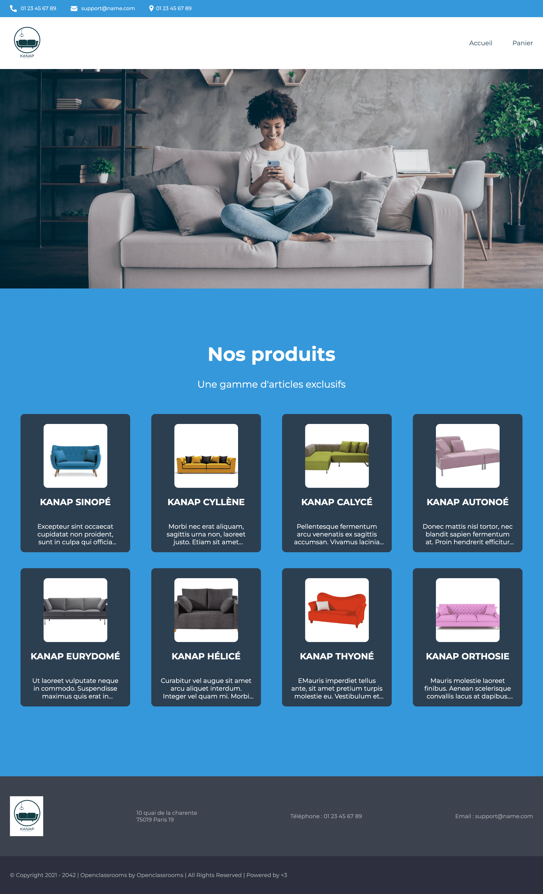
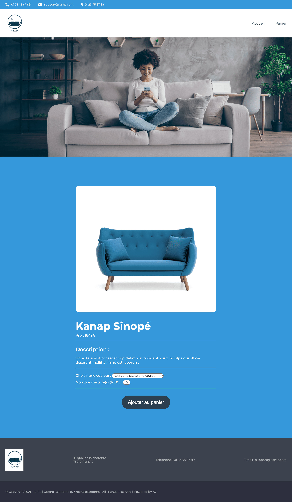
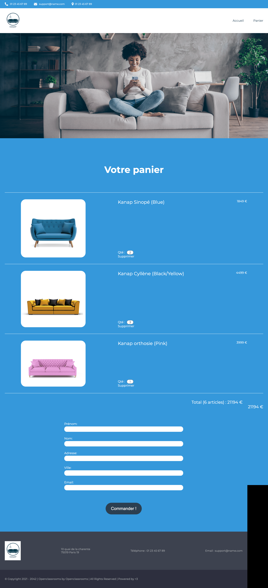
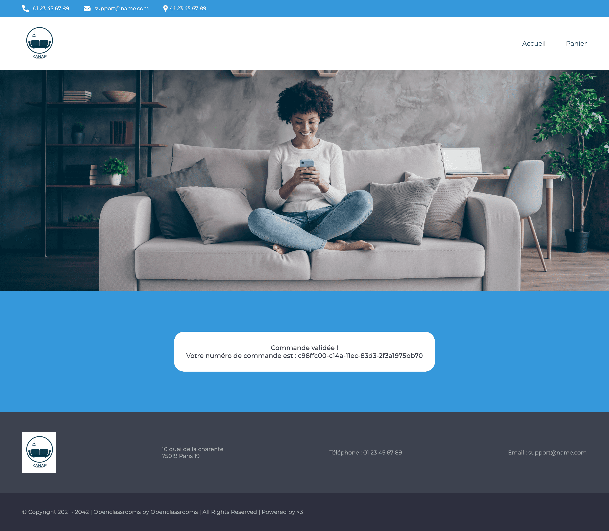

Développer le frontend d'une application de vente en ligne.
Cette page présente l’ensemble des produits retournés par l’API. Pour chaque produit, il faudra afficher l’image de celui-ci, ainsi que son nom et le début de sa description. En cliquant sur le produit, l’utilisateur sera redirigé sur la page du produit pour consulter celui-ci plus en détail .
Cette page présente un seul produit ; elle aura un menu déroulant permettant à l'utilisateur de choisir une option de personnalisation, ainsi qu’un input pour saisir la quantité. Ces éléments doivent être pris en compte dans le panier.
Sur cette page, l’utilisateur va pouvoir modifier la quantité d’un produit de son panier ; à ce moment, le total du panier devra bien se mettre à jour. L’utilisateur aura aussi la possibilité de supprimer un produit de son panier, le produit devra donc disparaître de la page. Les inputs des utilisateurs doivent être analysés et validés pour vérifier le format et le type de données avant l’envoi à l’API. Il ne serait par exemple pas recevable d’accepter un prénom contenant des chiffres, ou une adresse e-mail ne contenant pas de symbole “@”. En cas de problème de saisie, un message d’erreur devra être affiché en dessous du champ correspondant. Attention à ne pas stocker le prix des articles en local. Les données stockées en local ne sont pas sécurisées et l’utilisateur pourrait alors modifier le prix lui-même.
Sur cette page, l'utilisateur doit voir s’afficher son numéro de commande. Il faudra veiller à ce que ce numéro ne soit stocké nulle part.
Pour vérifier le bon fonctionnement des différentes étapes de l'application, j'ai rédigé un plan de tests unitaires où sont détaillés :
Pour ce projet, j'ai utilisé le logiciel de versionning Git. Retrouvez le code source sur mon repositories GitHub
{kind=link}
{kind=link}
{kind=link}